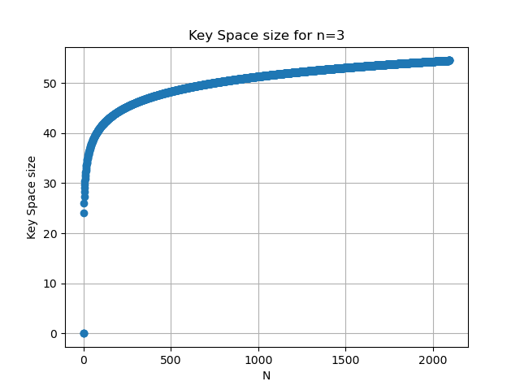
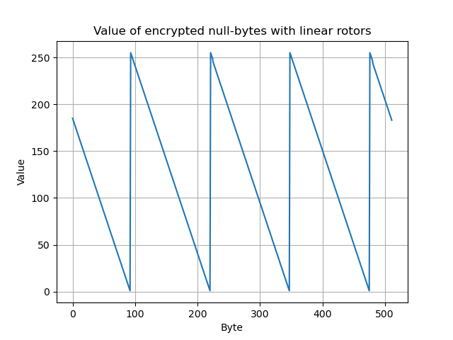
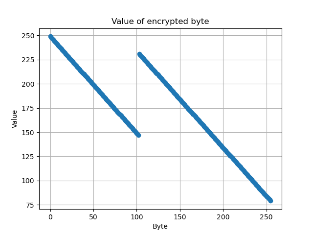

In this page, various possible attacks and weaknesses both on the BYTENIGMA algorithm itself and my implementation will be documented.
Key Space
- A single rotor can be configured in
 different ways, giving approximately 1638 bit of security per rotor. If
different ways, giving approximately 1638 bit of security per rotor. If  rotors are used, the key space increases to
rotors are used, the key space increases to  bit.
bit.
Note that for the last rotor in the chain, the key space is halved. Due to the complement, there always exist two rotors which cause the same mapping, since  is equivalent to
is equivalent to  . This causes the keyspace to be reduced by a single bit.
. This causes the keyspace to be reduced by a single bit.
- If the specific rotor wirings are considered as domain parameters and there are
 total rotor wirings and the machine is always used with , then there are simply
total rotor wirings and the machine is always used with , then there are simply  possible rotor permutations. For a chosen permutation, each rotor can be started in one of 256 positions, giving an additional
possible rotor permutations. For a chosen permutation, each rotor can be started in one of 256 positions, giving an additional  possible starting configurations. In total, this gives
possible starting configurations. In total, this gives  bit of security. Assuming the use of 3 rotors (
bit of security. Assuming the use of 3 rotors (  ), we can graph the relationship between and :
), we can graph the relationship between and :

Additionally note that the keyspace is simply limited by the number of plaintext byte encrypted. On average, a rotor at position (0-indexed) rotates every  input bytes. If, during the entire encryption of a given plaintext, a rotor does not turn, it does not have to be considered as part of the keyspace. For the ciphertext, an equivalent BYTENIGMA machine can be constructed which consits only of the turned rotors, with the last rotor simply "including" the mapping applied by the rotors which did not move at all. This means that choosing more rotors is not an effective method of increasing the keyspace. For example, encrypting 512 bytes using 3 rotors is on average not less secure than using 30 rotors.
input bytes. If, during the entire encryption of a given plaintext, a rotor does not turn, it does not have to be considered as part of the keyspace. For the ciphertext, an equivalent BYTENIGMA machine can be constructed which consits only of the turned rotors, with the last rotor simply "including" the mapping applied by the rotors which did not move at all. This means that choosing more rotors is not an effective method of increasing the keyspace. For example, encrypting 512 bytes using 3 rotors is on average not less secure than using 30 rotors.
Indistinguishability & Bias
There is a trivial bias in the output: Any given input byte  can never be encrypted to itself. This can be proven as follows:
can never be encrypted to itself. This can be proven as follows:
- When a byte is passed "forward" through the rotors, it takes a "path"
 through the rotors. This "path" is then the only path in the current configuration which maps to
through the rotors. This "path" is then the only path in the current configuration which maps to  .
. - At the end of the rotors, the bitwise complement of is taken and passed back through the machine. By nature of a bitwise complement, is is guaranteed that
 .
. - The fully encrypted byte is then taken "backward" through the rotors, with a "path"
 .
. - Because and the paths are unique for a given rotor configuration, it is guaranteed that
 .
.
This can also be experimentally verified by encrypting 131072 (1 MiB) null-bytes and printing the least common outputs:
This shows that the null-byte appeared exactly zero times in the output.
Due to this fact, indistinguishability is not given. A truly random output would have an equal distribution over all possible bytes, instead of excluding the input bytes.
Linear rotors
The security of the machine strictly depends on non-linearity of the rotors. This is simply demonstrated by constructing rotors in a strictly linear fashion and encryption 1 MiB null-bytes:
Visualising the first 512 output bytes clearly shows a linear pattern:

Finding the position of the 0 in the first rotor
Using a chosen plaintext attack, it is trivial to find the index of the 0 in the first rotor.
Finding the index of the 0 in the first rotor is equivalent to finding the index at which the second rotor turns. We know for a fact that this happens exactly once during the first 256 bytes encrypted using the machine.
We can force the output of the first rotor during the forward pass to be the same in every one of those 256 encrypted bytes, simply by sending bytes in decending order. For example, if we encrypt the byte 0xff, lets assume rotor[0][0xff] is some value . After the byte is encrypted, the first rotor guaranteed to be turned by one. If the next encrypted byte sent is 0xfe, it will be mapepd to rotor[0][0xfe + 1] (due to the rotation by one), which is equivalent to .
Once the output of the first rotor in the forward pass is the same, the path taken through the rest of the machine is guaranteed to be the same, as long as no other rotor turned. This means that the input to the first rotor in the backward pass is also guarnteed to be the same. Since between the two bytes rotor[0] was turned exactly by one, the same input will be mapped to  and
and  respectively.
respectively.
Thus, when encrypting the sequence [0xff, 0xfe, 0xfd, ..., 0], the output will be linear until the second rotor turns. If and only if the second rotor turns, linearity breaks. We can thus simply analyse the output to find this point, yielding the index of the 0 in the first rotor.
This can simply be demonstracted by plotting the encrypted bytes using the [0xff, ..., 0] sequence as input:

In the plot, it is clearly evident that the linearity breaks and the script outputs that the linearity breaks at 102.
Indeed validation shows that rotors[0][102] == 0.
We have shown that is is possible, using a single chosen plaintext, to recover the position of the 0 in the first rotor.
Missing Nonce
The BYTENIGMA encryption is equivalent to a polyalphabetic encryption, where each position in the cleartext gets assigned an alphabet based on the rotor configuration.
However because no nonce is used, key reuse is fatal. If an attacker has a single pair of known plaintext and corresponding ciphertext, they can deduce not only the mappings for the specific bytes from the plaintext, but also make assumptions about the alphabets if the attacker can find sequences of bytes in the ciphertext where only the first rotor has turned. This potentially allows an attacker to recover parts of an unknown ciphertext, given a single known plaintext pair. Thus, key reuse must be avoided.
Note: In the original enigma, this was somewhat prevented, by encrypting a "message key" at the beginning of each message using the "daily key", and encrypting the rest of the message using the "message key". However, as Rejewski's characteristic method proves, this was not fully effective.
Side Channel Attack
There is an obvious side-channel attack on this specific implementation of BYTENIGMA. Let's take a look at the implementation of Bytenigma::turn_rotor:
Notice the recursive nature of this implementation. If and only if a rotor overflowed and there are more rotors to turn, a recursive call is made. This will incur more executed instructions than if no overflow occurred. We can thus expect that it is feasible to deduce the position of the 0 of all rotors except the last rotor in the chain by counting the number of instruction executed, or indirectly by measuring the execution time when encryption a single byte.
This should be fixed by making the execution time independent of an overflow, e.g. by using branchless programming. A rotor should be turned by 0 if the previous rotor did not overflow, and turned by 1 if the previous rotor overflowed.